One engine assigns meaning by letting constraints relax into agreement — the same core, from galaxies to genomes to markets. Give it objects, labels, and a compatibility, and it settles the whole field into a mutually consistent labeling. Below: interactive, dark, and mostly built on real data.
Every tile runs in your browser. The bulk are the Project Genesis series — real cosmology, neuroscience and econometrics through the one engine, honestly framed.
The generic engine running in your browser: DNA complement by relaxation, order-3 molecular chirality (R/S), and few-shot label propagation.
newest ✦The engine composes: pitches are labels, melodic smoothness & chord tones the constraints. It relaxes a melody and plays it. A tiny answer to Suno.
newest ♪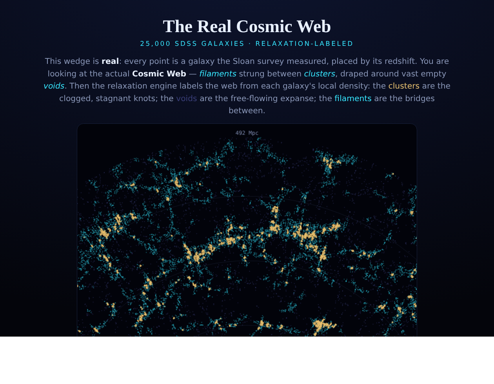
25,000 SDSS galaxies, relaxation-labeled into void, filament & cluster.
real data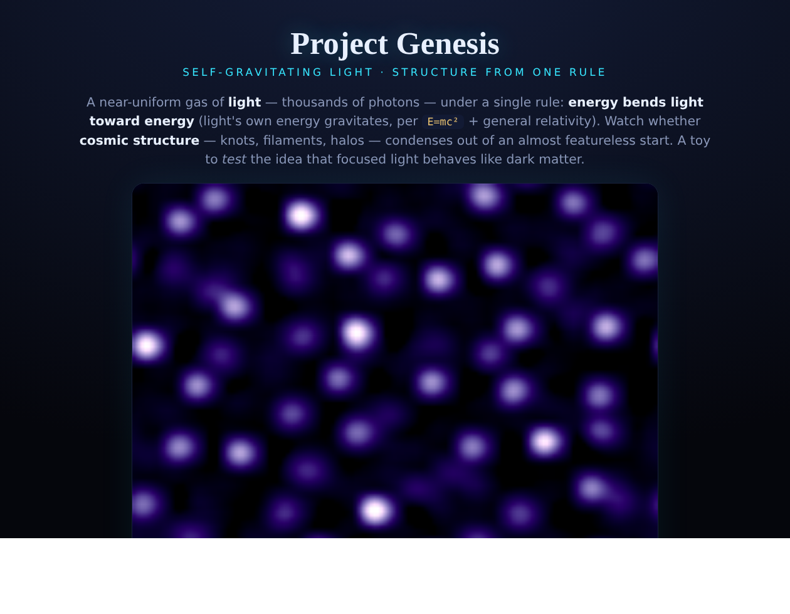
Light condenses cosmic structure from a single rule. The origin of Project Genesis.
simulation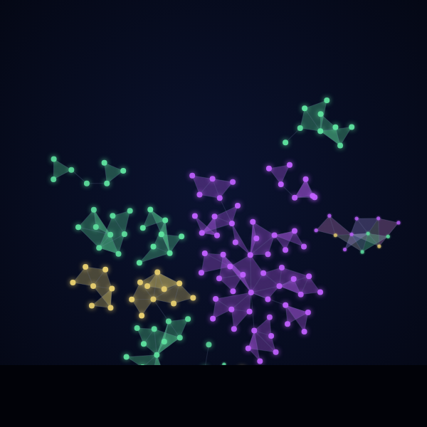
A simplicial organism that labels, grows, grooms & reproduces itself — now in simplicial & grid bodies.
autopoiesis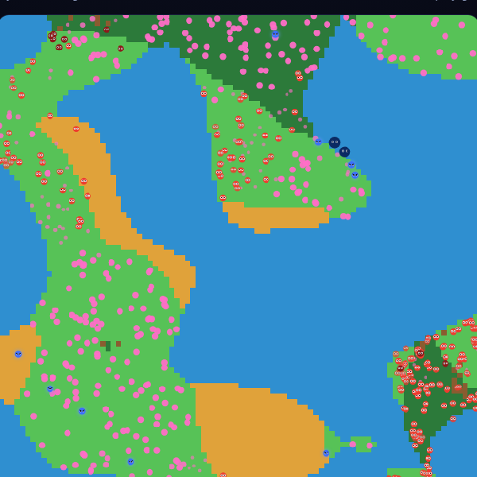
A little 2-D world that grows itself — grazers, hunters & shifting biomes. Built with Elbie.
simulation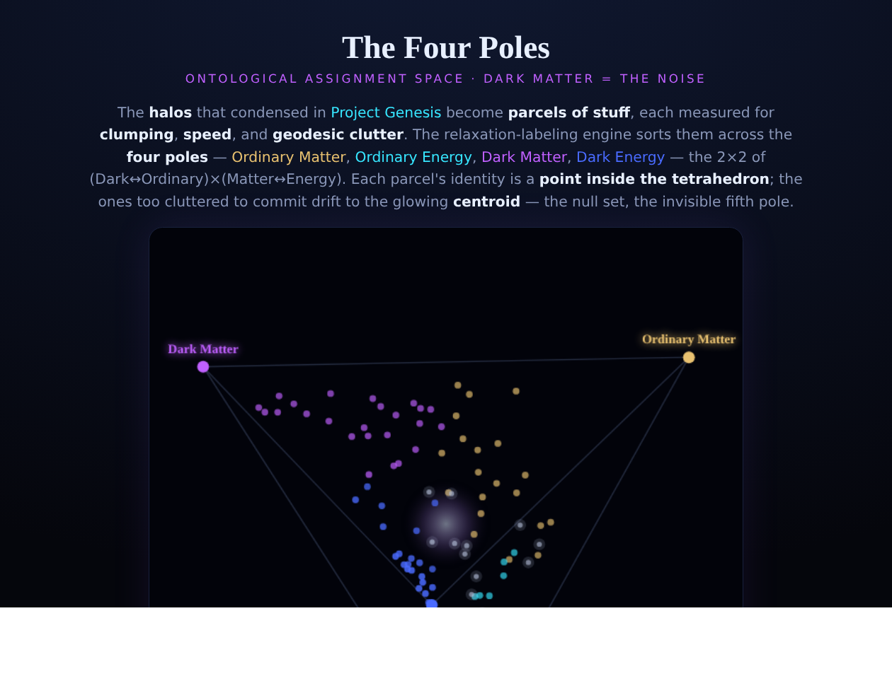
A tetrahedral ontology — dark matter as the null-set noise at the centroid.
concept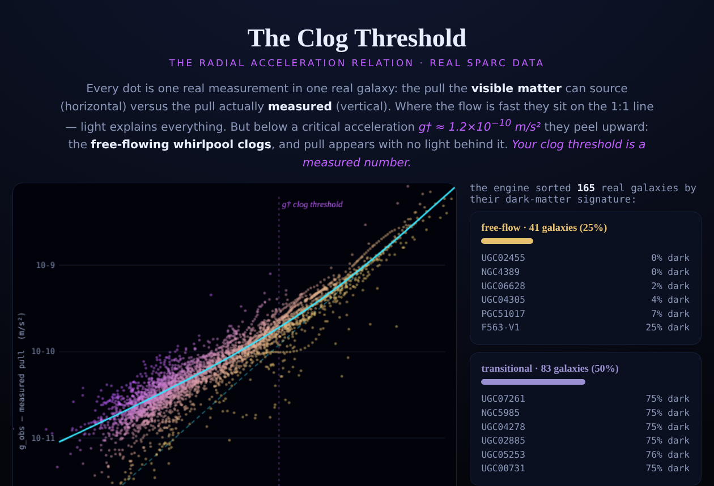
The Radial Acceleration Relation, from 3,343 real measurements.
real data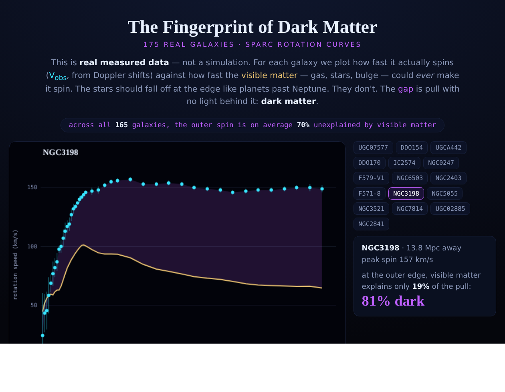
165 real galaxy rotation curves — the gap with no light behind it.
real data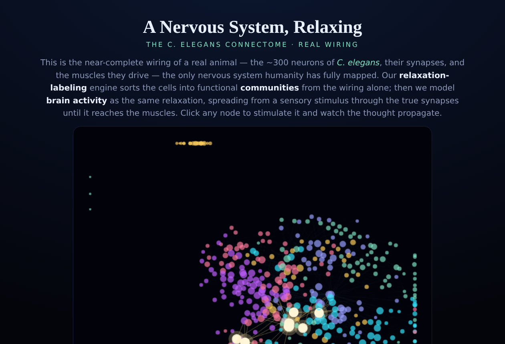
The real C. elegans connectome, labeled into functional communities.
real data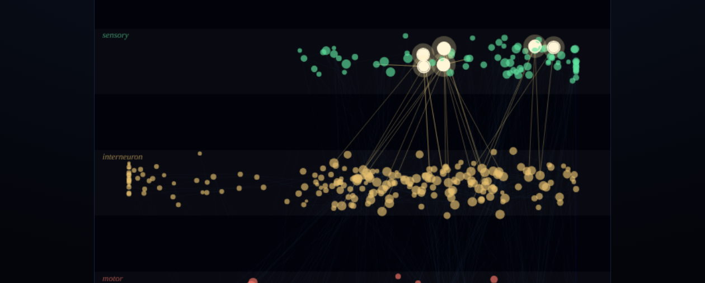
Trinary relaxation: sensory → interneuron → motor on the real wiring.
real data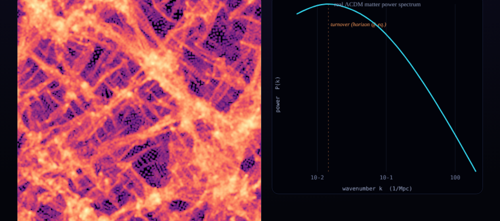
A cosmic web grown from the real ΛCDM matter power spectrum.
simulation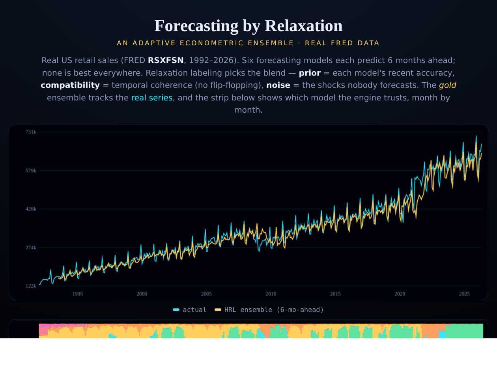
An adaptive econometric ensemble that beats every single model.
real data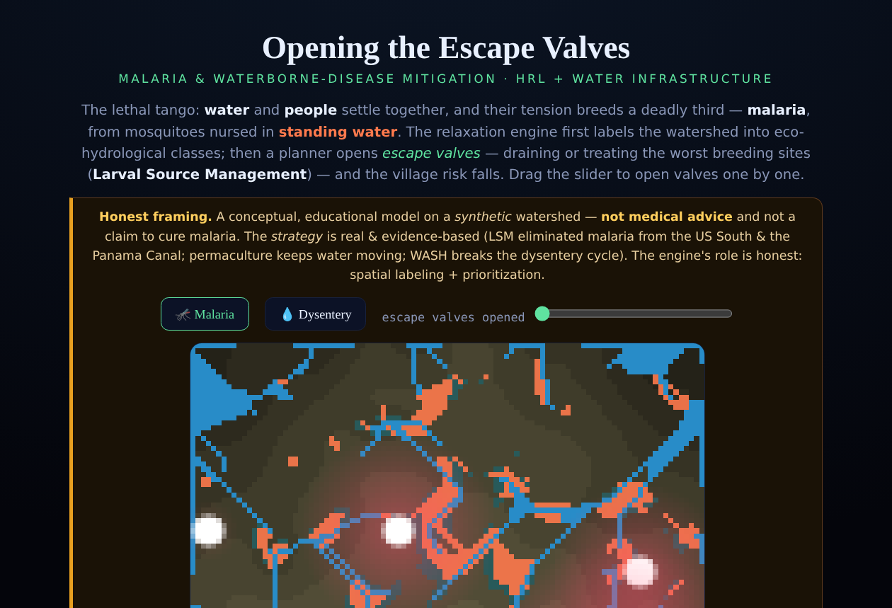
Malaria & waterborne‑disease mitigation — labeling a watershed, draining the breeding.
public health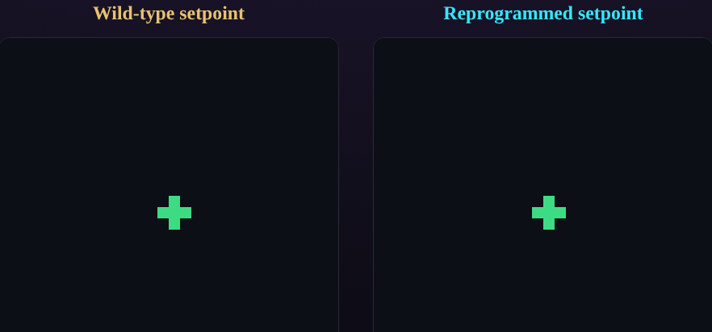
A single cell relaxes into a whole patterned body — growing-graph morphogenesis.
simulation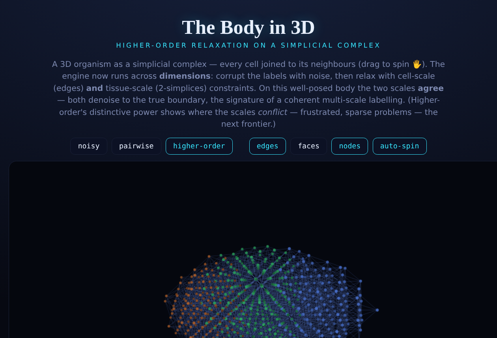
Higher-order relaxation on a growing 3-D complex.
topologyThe Gooblets & Zappies world keeps growing — designed hand-in-hand with Elbie. The four newest additions, each a small rule layered onto the same relaxation-labeled world:
A peaceful Nature Gooblet crosses the Grove portal up to the surface under a 🤝 Helpful King and plants up to three blue flowers as it roams — a new entry in the Plantiary.
newOnce a Dragonling grows old enough it grows up — bigger, winged — and stops hunting to fly home to the Dragon Island and rule alongside the Dragon King.
newThe hero who slays the Fire Giant and rises as the Red King now walks through lava and fire completely unharmed — the flames can never touch him again.
newA new tool opens a live panel naming who wears each of the five crowns — Sea, Dragon, Human, Fire and Nature — or — none — when a throne sits empty.
newRelaxation labeling (Rosenfeld–Hummel–Zucker, extended with a learned noise label) takes a set of objects, a set of labels, and a compatibility function that says how much one labeled pair reinforces another. It iteratively relaxes the field into a mutually consistent labeling. Only the compatibility kernel and prior change between domains:
| Domain | objects | labels | what compatibility encodes |
|---|---|---|---|
| Cosmology | galaxies / parcels | void · filament · cluster | local density & neighborhood coherence |
| Neuroscience | neurons | sensory · inter · motor | directed synaptic flow through the connectome |
| Econometrics | forecast origins | candidate models | recent accuracy + temporal coherence |
| Motion capture | measured 3-D points | skeleton markers | inter-point distances match the model |
| Strategy | chess pieces | tactical roles | roles that co-occur in a real plan |
The Python core is a tested library (hrl.core.RelaxationLabeler) — see the
repository.